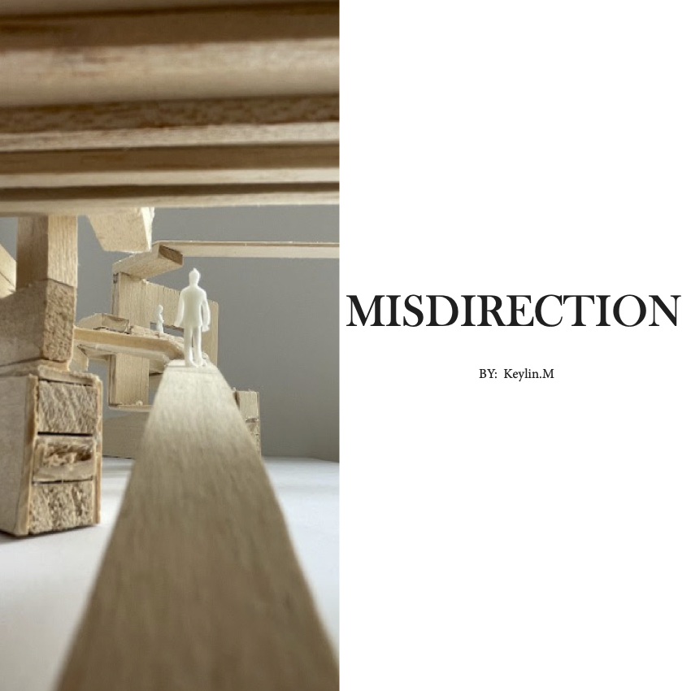

Misdirection Vertical Stage – High Line connector design concept emphasizing path and flow
Created in ARCH 1121, this conceptual architectural project reimagines a public connector between two buildings in Brooklyn. Inspired by natural branching forms, “Sprouting Arms” creates multiple angled pathways to promote dynamic user flow and exploration.
